Installing Python on Linux#
There are many different ways to install the Python language and Python packages. Below, we provide one way that works well for everything we need in the class. Please stick exactly to the instructions unless you know what you are doing and are absolutely sure you will never need any help from us.
If you have previously installed Python in a different way you can either keep your installation (if you know what you are doing) or uninstall it and do a fresh install according to the instructions.
We will cover the following topics:
How to install mamba: Mamba is a fast package manager that will install everything else. We install it via miniforge.
How to create the course environment: The course environment is a collection of Python packages that we will need for the course.
Installing mamba#
Go to conda-forge/miniforge and Download the Linux x86_64 version of the installer in your Downloads folder.
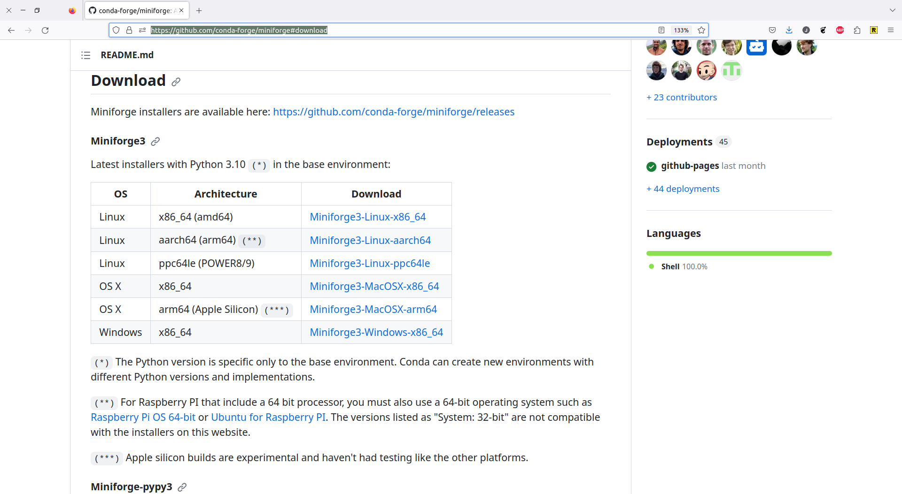
Open a Terminal in the directory to which you downloaded the installer. You can use
pwd to find out where you are and ls to verify that the installer is actually there.
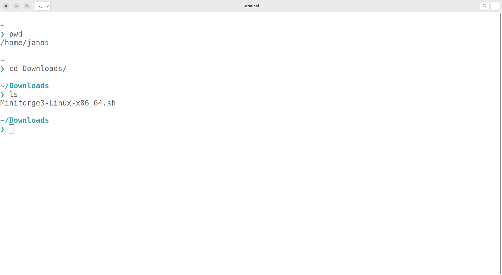
Type bash Miniforge3-Linux-x86_64.sh and hit enter.
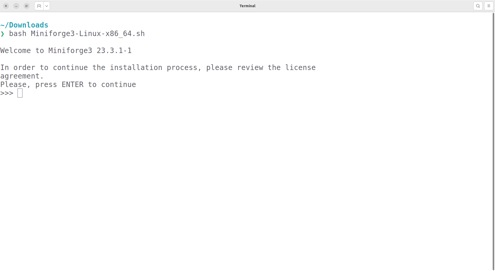
Then, you will have to hit enter several times more until you get to the license
agreement. Type yes and hit enter again.
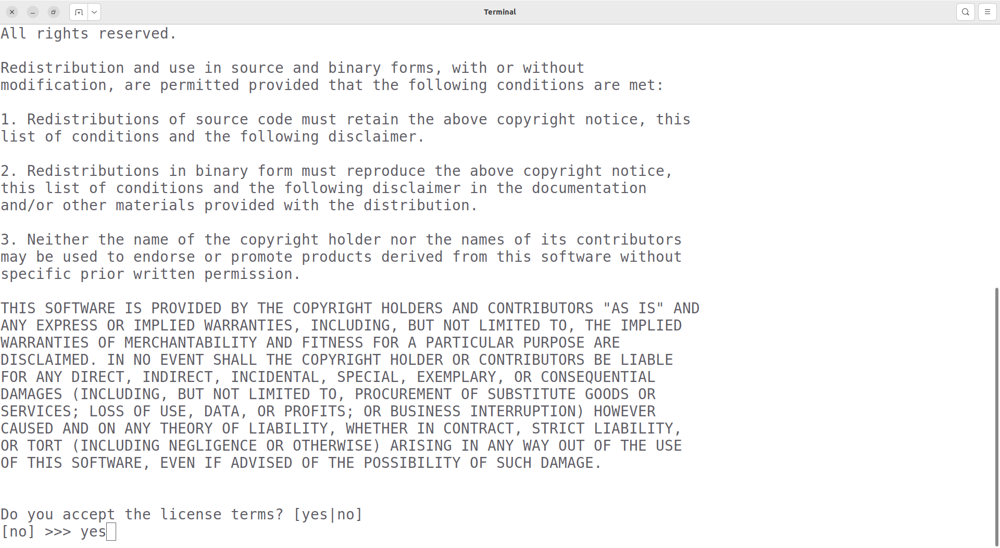
Next, you can choose the location where miniforge should be installed. This should be a path with no spaces or special characters in it. As long as your username does not contain such characters, you should go with the default.
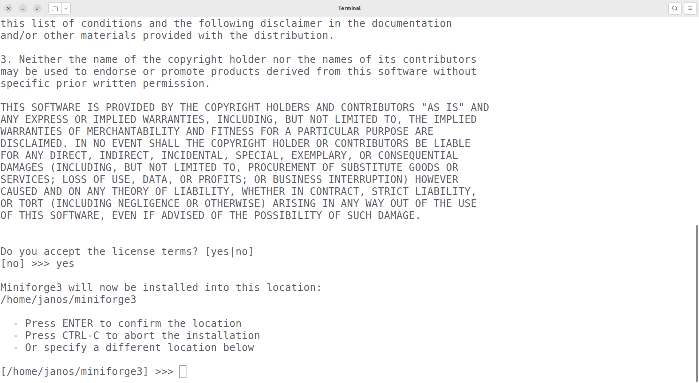
Next, you will be asked whether you want to run conda init. Type yes and hit enter.
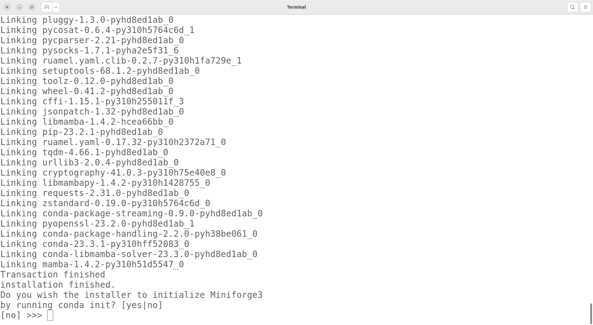
After a while, your screen should look like this.
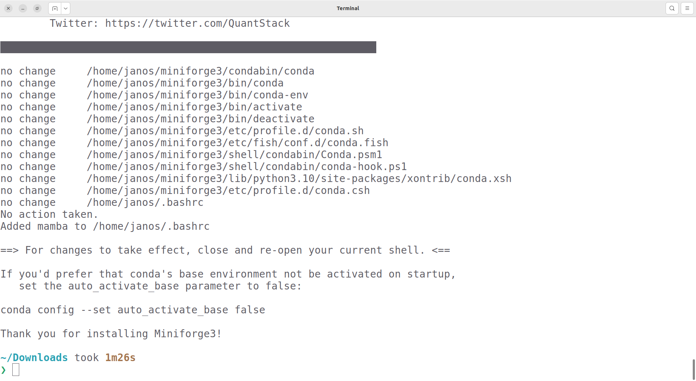
Before you can use mamba, you need to restart your terminal!. After the restart, you
can type mamba info to quickly check your installation. If it worked, you will see the
mamba logo.
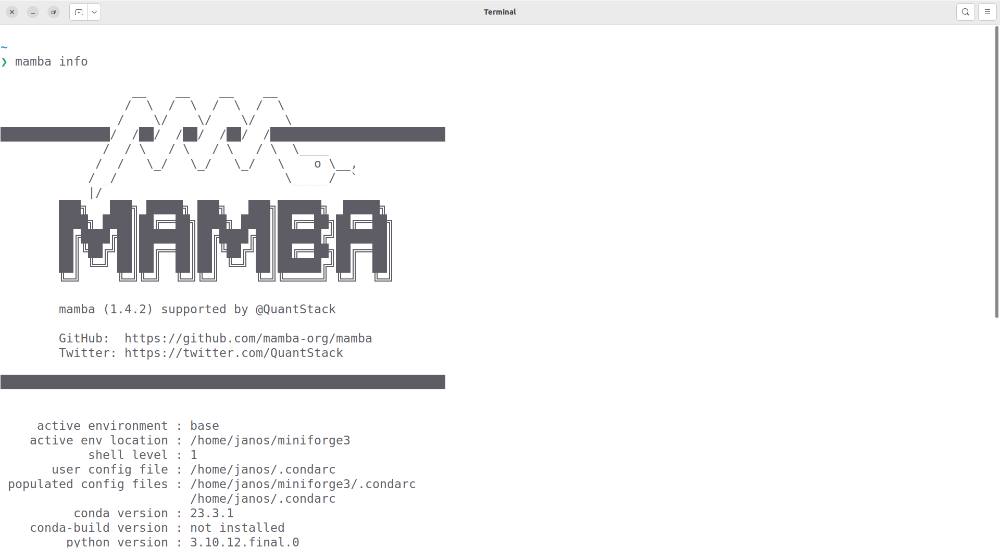
Creating the course environment#
The course environment is a collection of packages that we need for the class. Some of those packages are not included in the standard anaconda distribution.
Later in the course, you will learn many benefits of using virtual environments. Until then, believe us they are a good idea.
You start by downloading the
As before, open your Terminal in the directory where you chose to save the course
environment. You can use pwd to find out where you are and ls to verify that the file
is where you expect it to be.
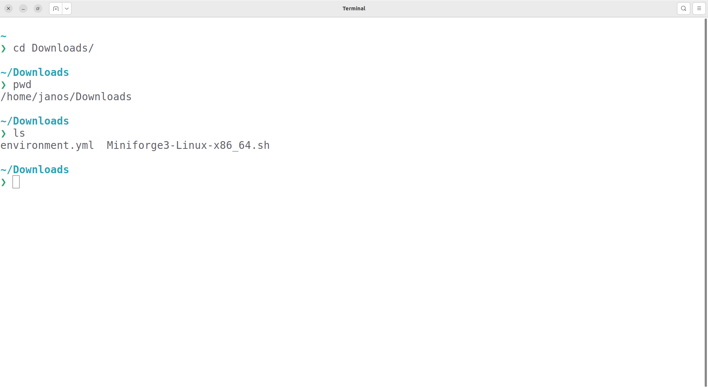
Execute mamba env create -f environment.yml. This will print a lot of things to your
terminal and take a while. Do not interrupt it or close the terminal.
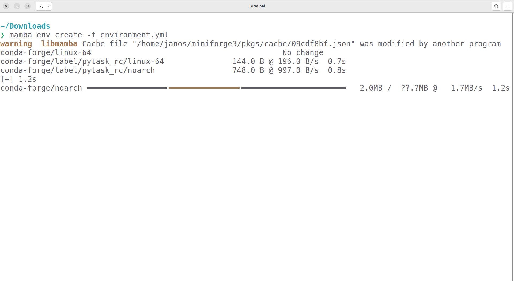
When environment creation is finished, it will give you the commands to activate the environment.
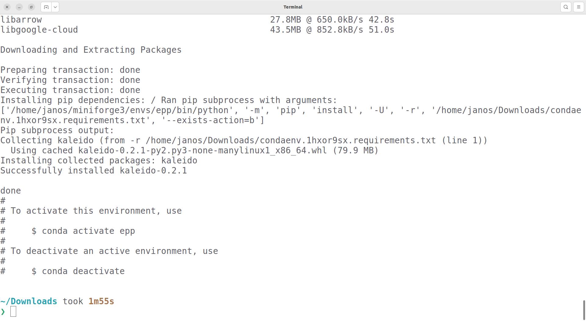
To check that everything worked, you can activate the environment once. You will have to activate it again each time you start a new Terminal. More about that later.
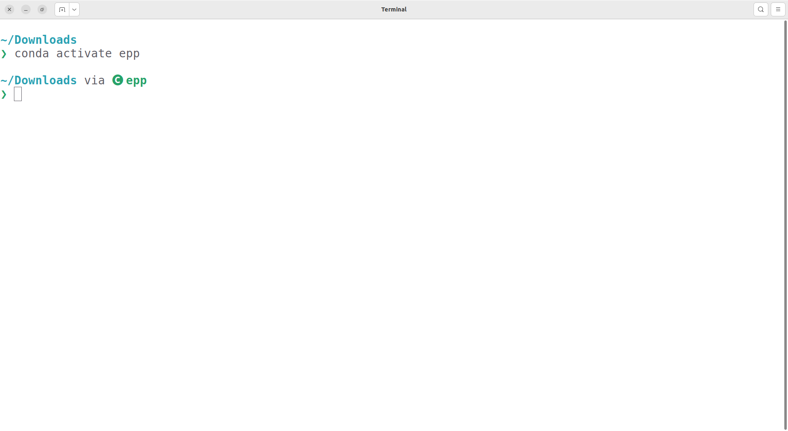